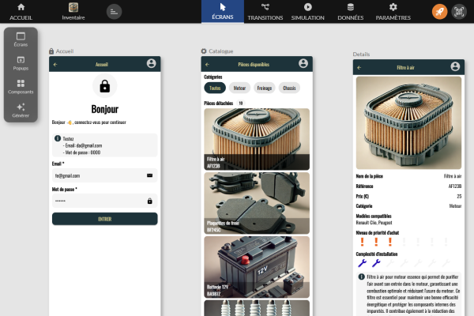
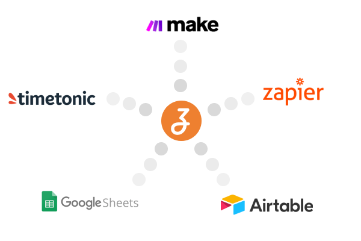
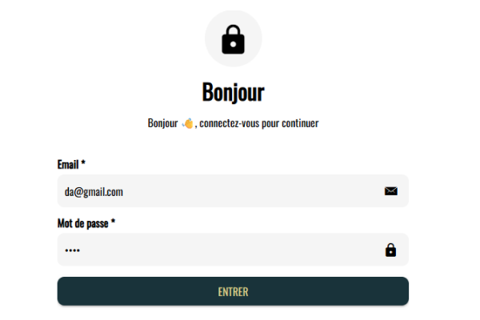
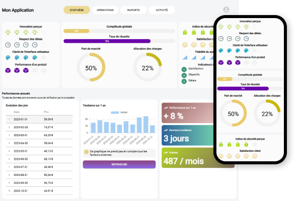
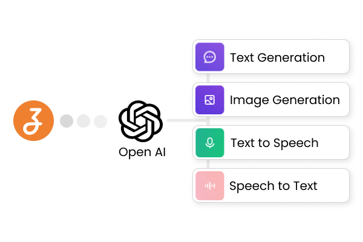
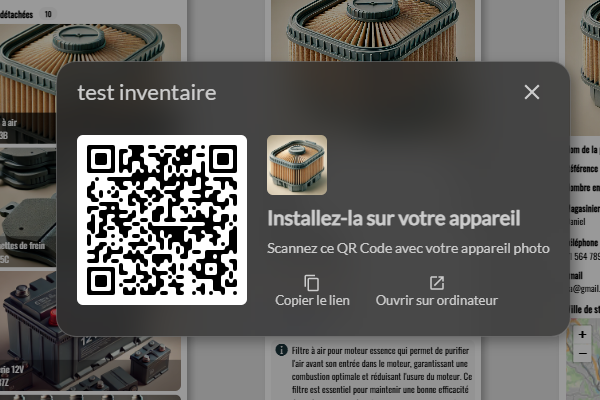

Créez des apps rapidement
Vous n'avez pas besoin d'écrire de code, vous pouvez vous concentrer sur la conception et la personnalisation de votre projet

Connectez-vous à vos données
Connectez vos données en utilisant des connecteurs natifs: Google Spreadsheet, Airtable et TimeTonic
Automatisez vos flux de travail en utilisant Make et Zapier

Connectez-vous avec vos utilisateurs
Permettez aux utilisateurs publics et privés d'accéder à leurs données
Notifiez vos utilisateurs instantanément par SMS, Email et Notifications

Une expérience fluide sur tous les écrans
Compatible mobile, tablette et ordinateur avec affichage optimisé pour chaque support.
Utilisez les Containers et les Popup adaptatives pour organiser facilement vos contenus

Exploiter la puissance de l'IA
Créez des applications plus intelligentes et plus efficaces en générant du texte (ChatGPT) et des images (Dall.E)

Publiez et surveillez votre application
Publiez votre application instantanément et partagez votre application avec vos utilisateurs en utilisant le QR code généré
